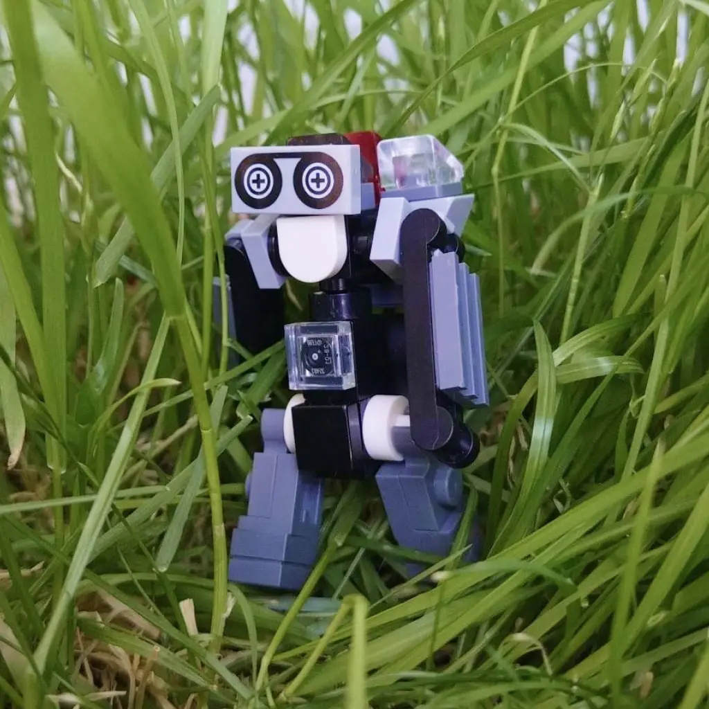

用 Brickit 把五年没碰的乐高翻成了可查的数字库存
家里两万多块乐高散在五个整理箱，以前想复刻绝版套装全靠翻箱倒柜。这套 Brickit + Pockets + Rebrickable 的组合流程，让我三个晚上就把库存数字化了。
我有五个整理箱的乐高积木——大概两万多块，从十年前的绝版套装到孩子过生日收到的主题套都混在一起。以前想从中复刻一套绝版的 75102 歼星舰，流程是这样的：
拿出说明书 → 列零件清单 → 蹲在地上翻三个小时箱子数零件 → 数到第 47 种就乱了 → 凭感觉下单一批可能缺的 → 到货后发现买重了三种、还是缺两种 → 搁置。
这套流程我跑了三年，一次完整复刻都没成过。直到去年年底发现 brickit官网 上宣传的那款 AI 拍照识别乐高积木的手机 APP——我才第一次把这些箱子变成了一个"可搜索的数字库存"。
旧流程到底卡在哪
翻箱倒柜找零件这件事，本质上有三个解决不了的问题：
第一是你不知道自己有什么。按颜色分盒看起来整齐，但一个红色 2x4 可能分布在三个盒子里——你数的时候得把每个盒子都倒出来再回去。按形状分盒更难，你得先认出零件编号才能归类，两万块光整理就得一个月。
第二是你不知道还缺什么。想复刻一套已知零件清单的套装，你需要把自己的库存和套装清单做差集运算——这件事靠人脑和 Excel 都做不了，因为乐高零件编号有几千种变体，光"红色 2x4"就有至少五个不同的设计版本。
第三是你花的时间没有积累。今天数完的零件，明天孩子拿去搭了个城堡又扔回去，你下次还得重数。整理乐高这件事，传统方法的维护成本跟重新整理一次一样高。
这三个问题，靠更勤奋地翻箱子是解决不了的。需要的是一个能把"手动清点"变成"自动识别"的工具，再把这个工具的输出接到已有零件清单数据库上。
新流程：拍一张照，零件自动入库
现在我整理库存的流程是这样的——一条从物理世界到数字世界的完整链路：
第一步：分批扫描，编号袋装。
我先买了 20 个 12 号透明自封袋，用马克笔给每个袋子编号（01 到 20）。然后把五个整理箱里的积木按"一把抓"的方式分装进袋子——每袋大概 150 到 200 块，不按颜色也不按形状分类。
分完之后，先装好 brickit下载 的 APP，拿起手机打开 Brickit，对着每个袋子拍一张照片。APP 会进入 10 到 60 秒的识别阶段，识别完成后屏幕上会在原照片上覆盖彩色轮廓框，每块被识别到的积木都高亮标记，APP 自动统计出这个袋子里有多少块、多少种零件、分别是什么型号。

识别完确认没什么大偏差——偶尔会有 2x4 被标成 2x3 的情况，直接在 APP 里点那块被认错的积木，手动改一下型号就行，比翻箱子找这块零件快多了。然后把这个袋子的扫描结果存进 Pockets 系统，标注"袋子 01"。
第二步：导出库存，对接 Rebrickable。
20 个袋子扫完，Pockets 里就有了一份完整的零件目录——每种零件有多少块、分布在哪几个袋子里，都能精确查到。Brickit 支持把库存导出成 BrickLink XML 格式，这个格式刚好是 Rebrickable 官方支持的导入格式。
Rebrickable 是乐高玩家社区里维护最全的套装零件数据库。把导出的 XML 上传到 Rebrickable 之后，它会自动把我的库存和所有已收录的乐高套装做匹配——我能立刻看到自己能完整复刻哪些套装、差多少块零件、差的零件分别是什么。
第三步：精准下单缺口零件。
以前我下单零件全靠"感觉大概缺这些"，现在 Rebrickable 直接告诉我：要复刻 75102 歼星舰，我缺 2 块红色 2x4（编号 3001）、5 块灰色 2x2 斜坡（编号 3039）——精确到零件编号和颜色。
下单之后，我在 Pockets 里给"待下单缺口"加了一个标记，拿到零件后扫一下就归到对应的袋子里，库存自动更新。
实操里最容易断链的两个环节
这套流程跑下来有两个地方容易卡壳，提前说一下省得踩坑：
扫描的"粒度"很重要。
每袋装 100 到 200 块是 brickit文档 里提到的官方推荐上限。我一开始不信，试着装了 300 块进一个袋子，结果识别出来有将近 20% 的零件被标成了"未知"——太多零件叠在一起会让 AI 分不清楚边界。老老实实按 200 块上限来，识别准确率基本能到 95% 以上，剩下那点手动修正几分钟就搞定。

搭完之后的库存回扫。
这是我一开始最忽略的一步——搭完一套之后，零件没放回原位，下次扫的时候库存就不准了。现在我养成的习惯是：搭完之后把残留的零件倒回原来的袋子里，拍一张照片，Pockets 会自动对比前后扫描结果，把拿走的零件从库存里扣掉。这个操作比手动登记快得多，而且不会出错。
这套流程省了什么，又没省什么
量化一下效果：以前我想复刻一套绝版套装，光清点库存就得三小时，还清点不准。现在扫 20 个袋子加导出上传 Rebrickable，总共花了三个晚上——准确说是 37 分钟扫描加两个晚上装袋。下单不再出现买重或缺件，库存匹配度从"瞎猜"变成了 Rebrickable 上显示的精确百分比。
但这套流程也有边界。首先，你得有几千块以上的积木才值得上 Pockets——一鞋盒积木扫一下就够了，没必要搞编号袋装那一套。其次，Brickit 的识别在服务端完成，得联网，地下室里没信号就扫不了。最后，如果你是那种"一有绝版 set 就立刻下单买齐零件"的玩家，其实不需要这套流程——你关心的是"能不能买到"，而不是"自己有没有"。
对于像我这样攒了一堆旧套装零件、想从中拼出新东西的人来说，Brickit 的核心价值是把"知不知道自己有什么"这个根本问题解决了。这件事传统整理方法做不到，靠更勤奋翻箱子也做不到——你需要一个能自动识别的工具，再把它的输出接到已有的数据库上。Brickit 把前半段做了，Rebrickable 做完了后半段，中间那个 XML 导出就是衔接点。
现在每次想搭点什么，我第一件事是打开 Rebrickable 搜一下这个套装，看看自己的库存匹配度——而不是先蹲下翻箱子。这个转变，就是一套工作流给你带来的效率提升，和装一个 APP 是两回事。
其实 Pockets 不是必须的——就算你只有一鞋盒积木、扫一下就搭、搭完扔回去，核心的扫描识别和创意推荐功能一样能用。但如果你真的攒了一堆旧套装零件想系统化管理，不妨先看看 Brickit 能给你带来什么。想了解更多的话，去 Brickit 的仓库翻翻源码和历史提交记录也是个不错的方式——GitHub、Gitee 和 GitCode 上都有对应的镜像，国内访问起来方便得多。